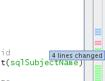

Apache NetBeans
Apache NetBeansLatest release
NetBeans IDEでのSubversionサポートの使用
| This tutorial needs a review. You can edit it in GitHub following these contribution guidelines. |
NetBeans IDEは、Subversionクライアント・バージョン1.6.x以降と緊密に統合されています。IDEのSubversionサポートは、共有リポジトリから作業するグループの開発プロセスを効率化するように設計され、IDE内で、プロジェクト・システムから直接バージョン管理タスクを実行できます。
このドキュメントでは、バージョン管理ソフトウェアを使用する場合の標準的なワークフローを説明することによって、IDEの基本的なバージョン管理タスクの実行方法を示します。
NetBeans SubversionのサポートはCygwinと一緒に使用した場合には機能_しない_ことに注意してください。
Subversionは、CVSの次世代の後継となりつつあるポピュラなオープン・ソース・バージョン管理システムです。次のような、様々な改善された機能を備えています。
-
名前変更、移動または除去が行われたファイルについて、すべてのバージョン履歴を提供します。
-
コミット操作は原子的であり、これは、変更のコレクションは、リポジトリに完全に入力されるか、または接続が失敗した場合は、まったく入力されないことを意味します。
-
プロジェクト・メタデータのバージョン管理が行われます。

Figure 1. このページの内容は、NetBeans IDE 6.9以降に適用されます
このチュートリアルを完了するには、次のソフトウェアとリソースが必要です。
| ソフトウェアまたはリソース | 必須バージョン |
|---|---|
バージョン6.9、7.0、7.1、7.2、7.3、7.4または8.0 |
|
バージョン6、7または8 |
|
1.6.xまたはそれ以降 |
*Windowsユーザーの場合の注意: *バンドル版SubversionクライアントをNetBeans IDEプラグインとしてインストールできます。「ツール」>「プラグイン」に移動し、「使用可能なプラグイン」タブを開き、「Bundled Subversion Client for Windows」をインストールします。
Subversionの設定
IDEのSubversionサポートを活用するためには、コンピュータにSubversionクライアント・ソフトウェアをインストールする必要があります。IDEのSubversionサポートは、バージョン管理コマンドを実行するためのSubversionクライアントとの対話によって機能します。システムに応じて、また、デフォルト以外の場所にSubversionクライアントをインストールしたかに応じて、IDEにSubversion実行可能ファイルのパスを登録する必要がある場合もあります。最後に、接続先のSubversionリポジトリがあることを確認する必要があります。
ソフトウェアの取得
コンピュータに次のソフトウェアがインストールされていることを確認します。
Subversion実行可能ファイルのパスの指定
NetBeans IDEは、コンピュータ上の`$PATH`システム変数を使用して、自動的にSubversion実行可能ファイルの場所を特定しようとします。ただし、プラットフォームに応じて、または別の場所にSubversionクライアントをインストールしたかどうかに応じて、実行可能ファイルのパスを明示的に指定する必要がある場合があります。
デフォルトで、Subversion実行可能ファイルは、UNIXおよびOS Xマシンでは`/usr/bin`または`/usr/local/bin/フォルダにインストールされ、Windowsでは`C:\Program Files\Subversion\bin\ (または`C:\Program Files\CollabNet Subversion\bin\`)にインストールされます。
*nixベースのマシンでは、ターミナル・ウィンドウに「which svn」と入力して、Subversion実行可能ファイルの場所を確認できます。Windowsマシンでは、`svn.exe`のシステム全体の検索を実行できます。
Subversion実行可能ファイルのパスをIDEに設定するには:
-
メイン・メニューから「ツール」→「オプション」(OS Xでは「NetBeans」→プリファレンス)を選択します。「オプション」ダイアログが開きます。
-
ダイアログの上部にある「その他」アイコンを選択し、「バージョン管理」タブをクリックします。「バージョン管理システム」下の左側のペインで、「Subversion」を選択します。ダイアログのメイン・ウィンドウに、Subversionのユーザー定義オプションが表示されます。
[.feature]

-
「SVNホーム・フォルダを指定」テキスト・フィールドに、実行可能ファイルのパスを入力するか、または「参照」をクリックしてシステム上のその場所まで移動します。パスにSubversion実行可能ファイルを_含める_必要はありません。
-
「OK」をクリックしてIDEを再起動すると、変更が有効になります。
=== 接続先のリポジトリがあることの確認
IDEからSubversionのアクションを呼び出す前に、Subversionリポジトリにアクセスできることを確認します。IDEでは、Subversionリポジトリの作成は頻繁に使用されるアクションではなく(本番環境では、リポジトリは、リポジトリ・レイアウトの設計の決定後に1回のみ作成されます)、さらに、それには管理コマンドが必要であるため、サポートしていません。
ローカル・リポジトリを使用してIDEのサポートを試す場合は、Subversionクライアント・ソフトウェアに含まれているsvnadminツールを使用して作成できます。
コンピュータ上にSubversionリポジトリを作成するには、`svnadmin create`を使用します。コマンド行プロンプトから、次を入力します。
svnadmin create /path/to/your/repository詳細は、http://svnbook.red-bean.com/en/1.1/ch05s02.htmlを参照してください。
== ローカル・ファイルとリポジトリの同期
バージョン管理システムを使用する場合、ローカル・ファイルとリポジトリを同期させ、ローカル・コピーに変更を行い、それらをリポジトリにコミットすることによって作業します。次の一覧に、特定の状況に応じて、NetBeans IDEでプロジェクトを同期できる様々な方法を示します。
=== IDEでSubversionプロジェクトを開く
IDEの外部で操作していたSubversionバージョン管理プロジェクトがすでに存在する場合、それをIDEで開くと、バージョン管理機能が自動的に使用可能になります。IDEは開いているプロジェクトをスキャンし、それらに`.svn`ディレクトリが含まれている場合、Subversionバージョン管理プロジェクトに対して、ファイル・ステータスとコンテキスト依存のサポートが自動的にアクティブになります。
=== リポジトリからのファイルのチェックアウト
IDEからリモート・リポジトリに接続し、ファイルをチェックアウトし、それらをすぐに操作する場合、次を実行します。
-
NetBeans IDEで、メイン・メニューから「チーム」>「Subversion」>「チェックアウト」を選択します。チェックアウト・ウィザードが開きます。
*注意: *IDEのドロップダウン・メニューはコンテキスト依存です。つまり、使用可能なオプションは現在選択されている項目によって異なります。そのため、すでにSubversionプロジェクト内で作業している場合、メイン・メニューから「バージョン管理」>「チェックアウト」を選択できます。
-
ウィザードの最初のパネルで、接続プロトコルと接続先のリポジトリの場所を含むURLを入力します。
IDEは、次のプロトコルのタイプをサポートしています。
| プロトコル | アクセス方法 | 例 |
|---|---|---|
file |
直接リポジトリ・アクセス(ローカル・ディスク上) |
|
http |
WebDAVプロトコルでのSubversion対応サーバー・アクセス |
|
https |
SSL暗号化付きHTTPプロトコルでのアクセス |
|
svn |
カスタム・プロトコルでの`svnserve`サーバー・アクセス |
|
svn+ssh |
外部SSHトンネル経由のSVNプロトコルでのアクセス |
|
使用するプロトコルに応じて、ユーザー名やパスワードなどの他の情報を入力する必要がある場合があり(http://、https://、`svn://`の場合など)、`svn+ssh://`の場合は、外部トンネルを確立するコマンドを指定する必要があります。
*注意: *`https`で証明書認証を実装しようとする場合は、ユーザー証明書認証を使用してSubversionリポジトリに接続する方法を参照してください。
`svn+ssh`の詳細は、SubversionでのSSHの設定方法を参照してください。
-
プロキシを使用している場合は、「プロキシ構成」ボタンをクリックし、必要な情報を入力します。リポジトリへの接続設定が正しいことを確認したら、「次」をクリックします。
-
ウィザードの「チェックアウトするフォルダ」パネルで、「リポジトリ・フォルダ」フィールドにチェックアウトするフォルダを指定します。チェックアウトするフォルダの名前がわからない場合、「参照」ボタンをクリックして、リポジトリに現在保持されているすべてのフォルダを表示します。表示された「リポジトリ・フォルダを参照」ダイアログから、表示されているいずれかのフォルダを選択し、「OK」をクリックします。これで、選択したフォルダが「リポジトリ・フォルダ」フィールドに追加されます(下のスクリーン・ショットでは「MyProject」が入力されています)。
-
「リポジトリ・リビジョン」フィールドにリビジョン番号を入力するか、空のままにして、フォルダ_HEAD_または最新リビジョンをチェックアウトすることを示します。
-
「ローカル・フォルダ」フィールドで、ファイルのチェックアウト先にするコンピュータ上の場所を入力します。「チェックアウト後にNetBeansプロジェクトをスキャン」オプションを選択されたままにし、「終了」をクリックしてチェックアウト・アクションを開始します。IDEによって指定したソースがチェックアウトされ、リポジトリからローカルの作業用ディレクトリへのファイルのダウンロードの進捗状況がIDEのステータス・バーに示されます。チェックアウト中のファイルを、「出力」ウィンドウから表示することもできます(Windowsでは[Ctrl]-[4]、OS Xでは[Cmd]-[4])。
*注意: *チェックアウトされたソースにNetBeansプロジェクトが含まれている場合、それらをIDEで開くように求めるダイアログが表示されます。ソースにプロジェクトが含まれていない場合は、ソースから新しいプロジェクトを作成し、IDEでそれらを開くことを求めるダイアログが表示されます。そのようなソースで新しいプロジェクトを作成する場合、適切なプロジェクト・カテゴリを選択し(新規プロジェクト・ウィザードで)、そのカテゴリ内の「既存のソースを使用する」オプションを使用します。
=== リポジトリへのファイルのインポート
または、IDEで操作していたプロジェクトをリモート・リポジトリにインポートし、同期されるようになった後に、IDEでそれを引続き操作できます。
*注意: *実際にはシステムからファイルを_エクスポート_しますが、「インポート」という用語は、バージョン管理システムで、ファイルがリポジトリに_インポート_されることを示すために使用されています。
プロジェクトをリポジトリにインポートするには:
-
「プロジェクト」ウィンドウ(Windowsでは[Ctrl]-[1]、OS Xでは[Cmd]-[1])から、バージョン管理されていないプロジェクトを選択し、ノードの右クリック・メニューから「バージョン管理」→「Subversionリポジトリにインポート」を選択します。Subversionのインポート・ウィザードが開きます。
-
インポート・ウィザードの「Subversionリポジトリ」パネルで、Subversion URLによって定義されたSubversionリポジトリのプロトコルと場所を指定します。選択によっては、リポジトリのユーザー名とパスワードなどの追加の設定の指定が必要になることがあります。`svn+ssh://`の場合は、外部トンネルを確立するためのトンネル・コマンドを指定する必要があります。詳細は、SubversionユーザーFAQを参照してください。「次」をクリックします。
-
「リポジトリ・フォルダ」パネルで、リポジトリ内にプロジェクトを配置するリポジトリ・フォルダを指定します。「リポジトリ・フォルダ」テキスト・フィールドには、デフォルトで、プロジェクトの名前を含むフォルダが自動的に提案されます。
-
「メッセージを指定」の下のテキスト領域に、リポジトリにインポートしようとしているプロジェクトの説明を入力します。
-
インポートを開始するには、「終了」をクリックします。必要に応じて「次」をクリックすると、3番目のパネルに進み、インポート用に準備されたすべてのファイルをプレビューできます。このパネルから、(下に示すように)インポート対象から除外するファイルを個別に選択したり、またはインポート前にファイルのMIMEタイプを特定したりできます。
「終了」をクリックすると、IDEによってプロジェクト・ファイルがリポジトリにアップロードされ、「出力」ウィンドウが開いて、進行状況が表示されます。
== ソースの編集
Subversionバージョン管理プロジェクトをIDEで開くと、ソースの変更を開始できます。NetBeans IDEで開く任意のプロジェクトと同様に、(「プロジェクト」(Windowsでは[Ctrl]-[1]、OS Xでは[Cmd]-[1])、「ファイル」(Windowsでは[Ctrl]-[2]、OS Xでは[Cmd]-[2])、「お気に入り」(Windowsでは[Ctrl]-[3]、OS Xでは[Cmd]-[3])などの) IDEのウィンドウで表示されているファイルのノードをダブルクリックすると、ファイルをソース・エディタで開くことができます。
IDEのソースを操作する場合、自由に使用できる様々なUIコンポーネントがあります。これらは、表示およびバージョン管理コマンドの操作で役立ちます。
=== ソース・エディタでの変更の表示
IDEのソース・エディタでバージョン管理されたファイルを開くと、リポジトリから以前にチェックアウトした基本バージョンに照らしあわせながら、そのファイルに行われた変更がリアル・タイムで表示されます。作業に伴って、IDEはソース・エディタのマージンに色分けを使用し、次の情報を伝えます。
| 青 ( ) | 古いリビジョンの後で変更された行を示します。 |
|---|---|
緑 ( ) |
古いリビジョンの後で追加された行を示します。 |
赤 ( ) |
古いリビジョンの後で除去された行を示します。 |
ソース・エディタの左側のマージンには、行ごとに発生した変更が表示されています。行を変更すると、その変更がすぐに左側のマージンに表示されます。
マージンの色のグループをクリックして、バージョン管理コマンドをコールできます。たとえば、左下のスクリーン・ショットは、赤いアイコンをクリックすると使用可能なウィジェットを示しており、ローカル・コピーから行が除去されたことを示します。
ソース・エディタの右側のマージンには、上から下に向かって、ファイル全体に行われた変更の概要が表示されます。ファイルに変更を行うと、すぐに色分けが生成されます。
マージンの特定の場所をクリックすると、インライン・カーソルがファイルのその場所にすぐに移動します。影響を受ける行数を表示するには、右側のマージンの色つきアイコンの上にマウスを動かします。
[.feature] |

左側のマージン | 右側のマージン
=== ファイルのステータス情報の表示 「プロジェクト」(Windowsでは[Ctrl]-[1]、OS Xでは[Cmd]-[1])、「ファイル」(Windowsでは[Ctrl]-[2]、OS Xでは[Cmd]-[2])、「お気に入り」(Windowsでは[Ctrl]-[3]、OS Xでは[Cmd]-[3])、または「バージョン管理」ウィンドウで作業する場合、IDEには、ファイルのステータス情報を表示するのに役立つ視覚機能がいくつかあります。次の例では、バッジ(例: image::images/badge-example.png[] バッジ、色分け、ファイル・ステータス・ラベル、およびおそらく最も重要なバージョン管理ウィンドウはすべて、効果的な表示および管理能力、およびIDEでのバージョン管理情報に貢献します。 * バッジと色分け * ファイル・ステータス・ラベル * バージョン管理ウィンドウ ==== バッジと色分け バッジはプロジェクト、フォルダおよびパッケージ・ノードに適用され、そのノードに含まれているファイルのステータスを示します。 バッジに使用される色のスキームを次の表に示します。 |
|UIコンポーネント |説明
|青のバッジ( ) |ローカルに変更、追加、または削除されたファイルの存在を示します。パッケージの場合、このバッジは、パッケージ自体にのみ適用され、そのサブパッケージには適用されません。プロジェクトまたはフォルダの場合、このバッジはその項目または含まれるサブフォルダ内の内容の変更を示します。
) |ローカルに変更、追加、または削除されたファイルの存在を示します。パッケージの場合、このバッジは、パッケージ自体にのみ適用され、そのサブパッケージには適用されません。プロジェクトまたはフォルダの場合、このバッジはその項目または含まれるサブフォルダ内の内容の変更を示します。
|赤のバッジ( ) |_競合する_ファイル(リポジトリに保存されているバージョンと競合するローカル・バージョン)を含むプロジェクト、フォルダまたはパッケージをマークします。パッケージの場合、このバッジは、パッケージ自体にのみ適用され、そのサブパッケージには適用されません。プロジェクトまたはフォルダの場合、このバッジはその項目または含まれるサブフォルダ内の競合を示しています。
) |_競合する_ファイル(リポジトリに保存されているバージョンと競合するローカル・バージョン)を含むプロジェクト、フォルダまたはパッケージをマークします。パッケージの場合、このバッジは、パッケージ自体にのみ適用され、そのサブパッケージには適用されません。プロジェクトまたはフォルダの場合、このバッジはその項目または含まれるサブフォルダ内の競合を示しています。
色分けは、リポジトリに照らして、現在のステータスを示す目的でファイル名に適用されます。 |
|色 |例 |説明
|青 | |ファイルがローカルに変更されたことを示します。
|ファイルがローカルに変更されたことを示します。
|緑 | |ファイルがローカルに追加されたことを示します。
|ファイルがローカルに追加されたことを示します。
|赤 | |ファイルに、ローカル作業コピーとリポジトリのバージョン間の競合が含まれることを示します。
|ファイルに、ローカル作業コピーとリポジトリのバージョン間の競合が含まれることを示します。
|グレー | |ファイルがSubversionによって無視され、バージョン管理コマンド(更新やコミットなど)に含まれないことを示します。まだバージョン管理されていない場合にのみ、ファイルが無視されます。
|ファイルがSubversionによって無視され、バージョン管理コマンド(更新やコミットなど)に含まれないことを示します。まだバージョン管理されていない場合にのみ、ファイルが無視されます。
|取消し線 | |ファイルがコミット操作から除外されることを示します。取消し線テキストは、個々のファイルをコミット・アクションから除外することを選択すると、「バージョン管理」ウィンドウや「コミット」ダイアログなどの特定の場所にのみ表示されます。そのようなファイルは、「更新」など、他のSubversionコマンドの影響は引続き受けます。
|ファイルがコミット操作から除外されることを示します。取消し線テキストは、個々のファイルをコミット・アクションから除外することを選択すると、「バージョン管理」ウィンドウや「コミット」ダイアログなどの特定の場所にのみ表示されます。そのようなファイルは、「更新」など、他のSubversionコマンドの影響は引続き受けます。
==== ファイル・ステータス・ラベル ファイル・ステータス・ラベルは、バージョン管理ファイルのステータスを、IDEのウィンドウにテキストで示します。デフォルトで、IDEは、ファイルをウィンドウに一覧表示するときに、そのファイルの右側にステータス情報(新規、変更済、無視など)およびフォルダ情報をグレー・テキストで表示します。ただし、この形式は独自のものに変更できます。たとえば、リビジョン番号をステータス・ラベルに追加する場合は、次を実行します。 1. メイン・メニューから「ツール」→「オプション」(OS Xでは「NetBeans」→プリファレンス)を選択します。「オプション」ウィンドウが開きます。 2. ウィンドウの上部にある「その他」ボタンを選択し、その下にある「バージョン管理」タブをクリックします。左側のパネルの「バージョン管理システム」の下のSubversionが選択されていることを確認します。詳細は前述のスクリーン・ショットを参照してください。 3. 「ステータス・ラベル形式」テキスト・フィールドの右側の「変数を追加」ボタンをクリックします。表示される「変数を追加」ダイアログで`{revision}`変数を選択し、「OK」をクリックします。「ステータス・ラベル形式」テキスト・フィールドに、リビジョン変数が追加されます。 4. ファイルの右側にステータスとリビジョンのみが表示されるようにステータス・ラベルを再フォーマットするには、「ステータス・ラベル形式」テキスト・フィールドの内容を次のように再整理します。 [source,java] ---- [{status}; {revision}] ---- 「OK」をクリックします。これでステータス・ラベルにはファイルのステータスとリビジョン番号(該当する場合)が表示されます。 ファイル・ステータス・ラベルは、メイン・メニューから「表示」>「バージョン・ラベルを表示」を選択して、オンとオフを切り替えできます。 image::images/file-labels.png[] ファイル・ステータス・ラベルは、メイン・メニューから「表示」>「バージョン・ラベルを表示」を選択して、オンとオフを切り替えできます。 ==== バージョン管理ウィンドウ Subversionバージョン管理ウィンドウは、ローカルの作業コピーの選択されたフォルダ内でファイルに行われた変更のすべてを、リアル・タイムで一覧表示します。これはIDEの下のパネルにデフォルトで開き、追加、削除または変更されたファイルを一覧表示します。 バージョン管理ウィンドウを開くには、(「プロジェクト」ウィンドウ、「ファイル」ウィンドウまたは「お気に入り」ウィンドウなどから)バージョン管理ファイルまたはフォルダを選択し、右クリック・メニューから「Subversion」>「変更を表示」を選択するか、またはメイン・メニューから「チーム」>「変更を表示」を選択します。IDEの最下部に次のウィンドウが表示されます。 [.feature] |

デフォルトでは、「バージョン管理」ウィンドウは、選択されたパッケージまたはフォルダ内の変更されたすべてのファイルを一覧表示します。ツールバーにあるボタンを使用することによって、すべての変更を表示するか、表示されるファイルの一覧をローカルまたはリモートで変更されたファイルに制限できます。一覧表示されたファイルの上にある列の見出しをクリックして、名前、ステータス、または場所でファイルをソートすることもできます。
注意:
-
開いているいずれかのプロジェクトのソース・ファイルが変更された場合に通知されるようにするには、メイン・メニューから「チーム」>「変更を表示」を選択します。または、「バージョン管理」ウィンドウが開いている場合は、「ステータスのリフレッシュ」ボタンをクリックします。
-
「プロジェクト」ウィンドウでの操作はプロジェクト自体でのみ機能し、再帰的ではありません。ネストされたプロジェクト/子プロジェクトで変更を表示するために、「ファイル」または「お気に入り」ウィンドウを使用できます。
「バージョン管理」ウィンドウのツールバーには、一覧に表示されているすべてのファイルに対して一般的なSubversionタスクを呼び出すことができるボタンも用意されています。次の表は、「バージョン管理」ウィンドウのツールバーにあるSubversionコマンドをまとめています。
| アイコン | 名前 | 機能 |
|---|---|---|
|
ステータスのリフレッシュ |
選択したファイルとフォルダのステータスをリフレッシュします。「バージョン管理」ウィンドウに表示されたファイルは、外部で行われた可能性のある任意の変更を反映してリフレッシュできます。 |
|
すべて差分を取得 |
差分ビューアを開くと、ローカルのコピーとリポジトリで保持されているバージョンを並べた比較が表示されます。 |
|
すべて更新 |
リポジトリから選択したファイルをすべて更新します。 |
|
すべてコミット |
ローカルの変更をリポジトリにコミットできます。 |

「バージョン管理」ウィンドウで、変更したファイルに対応する表の行を選択し、右クリック・メニューからコマンドを選択すると、他のSubversionコマンドにアクセスできます。

たとえば、ファイルでは次のアクションを実行できます。
* 注釈を表示: ソース・エディタで開かれているファイルの左マージンに、作成者、リビジョン番号情報を表示します。 |
|
* 履歴を検索: IDEの履歴ビューアで選択したファイルの複数のリビジョンを検索して比較できます。履歴ビューアから、差分を取得したり、選択したリビジョンにローカル・コピーをロール・バックしたりすることもできます。 |
[.feature] |


|* コミットから除外:
コミットを実行するときに除外するファイルをマークできます。 |[.feature]
|* 削除を元に戻す:
「変更内容を元に戻す」ダイアログを開き、ローカル作業コピー内のファイルにコミットした任意の削除アクションを元に戻すことができます。指定したファイルがIDEのローカル履歴アーカイブから取得され、ローカル作業コピーに復元されます。 |[.feature]
|* 変更内容を元に戻す:
ローカルの変更をリポジトリで管理されているリビジョンに戻す場合のパラメータを指定するために使用できる「変更内容を元に戻す」ダイアログを開きます。
リビジョンを指定する場合、「検索」をクリックして、「リビジョンの検索」ダイアログを開くことができます。これにより、リポジトリがスキャンされ、入力した日付に基づいて、すべてのファイル・リビジョンが表示されます。 |[.feature]
=== ファイル・リビジョンの比較 ファイル・リビジョンの比較は、バージョン管理されているプロジェクトを操作する場合に一般的なタスクです。差分コマンドを使用すると、IDEでリビジョンを比較できます。差分コマンドは、選択した項目の右クリック・メニュー(「Subversion」>「差分」)および「バージョン管理」ウィンドウから使用できます。「バージョン管理」ウィンドウで、差分を実行するには、リストされているファイルをダブルクリックするか、上部のツールバーにある「すべて差分を取得」アイコン( 差分の取得を実行すると、選択したファイルとリビジョンについてグラフィカルな差分ビューアがIDEのメイン・ウィンドウで開きます。差分ビューアには2つのコピーが並んだパネルに表示されます。右側により現在に近いコピーが表示されるため、作業コピーに対してリポジトリ・リビジョンを比較すると、右パネルに作業コピーが表示されます。 [.feature] |

差分ビューアは、バージョン管理の変更を表示する場所に使用されているのと同じ色分けを利用します。前に表示したスクリーン・ショットの緑色のブロックは、より現在に近いリビジョンに追加された内容を示します。赤いブロックは、前のリビジョンの内容が、より最近のリビジョンから除去されたことを示します。青は、強調表示された行で変更が発生したことを示します。
また、プロジェクト、パッケージまたはフォルダなどのグループで差分を実行する場合、あるいは「すべて差分を取得」( )をクリックする場合は、差分ビューアの上部領域にリストされているファイルをクリックすると、差分を切り替えることができます。
)をクリックする場合は、差分ビューアの上部領域にリストされているファイルをクリックすると、差分を切り替えることができます。
差分ビューアには次の機能もあります。
==== ローカル作業コピーへの変更の実行
ローカル作業コピーで差分の取得を実行する場合、IDEの差分ビューア内から直接変更を行うことができます。これを行うには、カーソルを差分ビューアの右ペインに置き、それに従ってファイルを変更するか、または強調表示された各変更の前後で表示されるインライン・アイコンを使用します。
置換( ): ): |
前のリビジョンから現在のリビジョンに、強調表示されたテキストを挿入します。 |
|---|---|
すべて移動( |
ファイルの現在のリビジョンを、選択した前のリビジョンの状態に戻します。 |
除去( |
現在のリビジョンから強調表示されているテキストを除去し、以前のリビジョンを反映させます。 |

==== 比較したファイルの相違間をナビゲート
差分に複数の違いが含まれている場合、ツールバーに表示された矢印アイコンを使用して、それらをナビゲートできます。矢印アイコンを使用すると、差分を上から下へ出現順に表示できます。
前( ): ): |
差分内で、前に表示された差分に移動します。 |
|---|---|
次( |
差分内で、次に表示された差分に移動します。 |

==== 表示条件の変更
ローカル作業コピー、リポジトリ、またはその両方からの変更を含むファイルを同時に表示するかどうかを選択できます。
ローカル( ): ): |
ローカルで変更されたファイルのみを表示します。 |
|---|---|
リモート(): |
リモートで変更されたファイルのみを表示します。 |
両方( |
ローカルとリモートの両方で変更されたファイルを表示します。 |

注意: 「バッジと色分け」セクションで説明されている色スキームは、前述のアイコンに関して無視されます。
=== ファイル・リビジョンのマージ
NetBeans IDEでは、リポジトリ・リビジョンとローカル作業コピー間で変更をマージできます。マージするリビジョンの範囲を指定できます。2つの別個のリポジトリ・フォルダからのリビジョンの範囲をマージすることもできます。
次のシナリオでは、一般的な使用例を説明しています。`JavaApp`というフォルダのトランク・バージョンをチェックアウトしており、コピーと分岐をマージしたいと考えます。デモの目的で、リポジトリ・レイアウトには、すべての分岐されたファイルを格納するために使用する`branches`フォルダが含まれます。
-
「プロジェクト」、「ファイル」または「お気に入り」ウィンドウで、マージ操作の実行先のファイルまたはフォルダを右クリックし、「Subversion」>「変更をマージ」を選択します。「マージ」ダイアログが表示されます。
-
「マージ元」ドロップダウン・リストから、「1つのリポジトリ・フォルダ(起点から)」を選択します。単一の分岐の作成時からのすべての変更を移植します。
-
「リポジトリ・フォルダ」テキスト・フィールドに、変更の移植元のフォルダのパス(
branches/JavaApp)を入力します。「終了リビジョン」フィールドを空のままにして、HEAD (つまり、現在の状態)までのすべてのリビジョンを含めることを示します。

-
「マージ」をクリックします。IDEによって、分岐リビジョンとファイルのローカル・コピー間に検出されたすべての相違が取り込まれます。マージ競合が発生した場合、ファイルのステータスはこれを示すために「競合をマージ」に更新されます。
注意: リビジョンをローカル作業コピーにマージした後、それらをリポジトリに追加するには、「コミット」コマンドを使用して、変更をコミットする必要があります。
== リポジトリへのソースのコミット
ソースに変更を加えた後は、それらをリポジトリにコミットします。一般に、競合が発生しないようにするため、コミットを実行する前に、リポジトリに照らして存在するコピーをすべて更新することをお薦めします。ただし、競合は発生する可能性があり、多くの開発者がプロジェクトを同時に操作する場合には自然な出来事であると考える必要があります。IDEでは、これらのすべての機能を実行できる柔軟なサポートを提供しています。さらに、競合が発生したときに、それらを安全に処理できる競合リゾルバも提供しています。
=== ローカル・コピーの更新
「プロジェクト」、「ファイル」または「お気に入り」ウィンドウのバージョン管理された項目の右クリック・メニューから、「Subversion」>「更新」を選択して、更新を実行できます。「バージョン管理」ウィンドウから直接作業する場合、表示されているファイルを右クリックし、「更新」を選択するのみで済みます。
すべてのソース・ファイルに対して更新を実行するには、「すべて更新」アイコン( )をクリックしますが、このアイコンは「バージョン管理」ウィンドウと差分ビューアの両方の上部にあるツールバーに表示されます。リポジトリで行われた変更は、「バージョン管理の出力」ウィンドウに表示されます。
)をクリックしますが、このアイコンは「バージョン管理」ウィンドウと差分ビューアの両方の上部にあるツールバーに表示されます。リポジトリで行われた変更は、「バージョン管理の出力」ウィンドウに表示されます。
=== 競合の解決
更新またはコミットを実行する場合、IDEのSubversionサポートはファイルとリポジトリ・ソースを比較して、同じ場所で他の変更がまだ行われていないことを確認します。以前のチェックアウト(または更新)がリポジトリ_HEAD_ (つまり最新のリビジョン)と一致しなくなり、_さらに_ローカル作業コピーに適用した変更が、変更されたHEADの領域と一致する場合、更新またはコミットは、_競合_になります。
バッジと色分けに示されているように、競合はIDEで赤のテキストで表示され、「プロジェクト」、「ファイル」または「お気に入り」ウィンドウで表示した場合に、赤のバッジ( )が付けられます。「バージョン管理」ウィンドウで作業する場合、競合はファイルのステータスによっても示されます。
)が付けられます。「バージョン管理」ウィンドウで作業する場合、競合はファイルのステータスによっても示されます。

ファイルをリポジトリにコミットする前に、発生したすべての競合を解決する必要があります。IDEで競合を解決するには、マージ競合リゾルバを使用します。マージ競合リゾルバは、変更を行ったときに、マージ済出力を表示しながら、個々の競合に順番に対処できる直観的なインタフェースを備えています。競合しているファイルについてマージ競合リゾルバにアクセスするには、そのファイルを右クリックし、「Subversion」>「競合を解決」を選択します。
マージ競合リゾルバは、競合のある2つのリビジョンを上のペインに横に並べて表示し、競合領域は強調表示されます。下部のペインは、2つのリビジョン間の個々の競合のマージが行われると表示されるファイルを示します。

上部のペインに表示される2つのリビジョンのいずれかを採用することで競合を解決します。採用するリビジョンの「同意」ボタンをクリックします。IDEによって、採用されたリビジョンがソース・ファイルにマージされ、マージ競合リゾルバの下のペインにマージの結果がすぐに表示されます。すべての競合を解決したら、「OK」をクリックしてマージ競合リゾルバを終了し、変更したファイルを保存します。競合を示すバッジが除去され、これで、変更したファイルをリポジトリにコミットできます。
=== コミットの実行
ソース・ファイルの編集、更新の実行および競合の解決後、ローカル作業コピーからファイルをリポジトリにコミットします。IDEでは、次の方法でコミット・コマンドをコールできます。
-
「プロジェクト」、「ファイル」または「お気に入り」ウィンドウで、新規または変更した項目を右クリックし、「Subversion」>「コミット」を選択します。
-
「バージョン管理」ウィンドウまたは差分ビューアから、ツールバーにある「すべてコミット」(
 )ボタンをクリックします。
)ボタンをクリックします。
「コミット」ダイアログが開き、リポジトリにコミットされるファイルが表示されます。

「コミット」ダイアログには、次が表示されます。
-
ローカルで変更されたすべてのファイル
-
ローカルで削除されたすべてのファイル
-
すべての新規ファイル(リポジトリにまだ存在しないファイル)
-
名前を変更したすべてのファイル。Subversionは元のファイルを削除し、新しい名前で複製を作成して、名前が変更されたファイルを処理します。
「コミット」ダイアログで、コミットから個々のファイルを除外するかどうかを指定できます。これを行うには、選択したファイルの「コミット・アクション」列をクリックして、ドロップダウン・リストから「コミットから除外」を選択します。同様に、新しいファイルが含まれる場合、ドロップダウン・リストから「バイナリとして追加」または「テキストとして追加」を選択して、MIMEタイプを指定できます。
コミットを実行するには:
-
「コミット・メッセージ」テキスト領域にコミット・メッセージを入力します。または、右上隅にある「最近のメッセージ」(
 )アイコンをクリックして、以前使用したメッセージのリストを表示して選択します。
)アイコンをクリックして、以前使用したメッセージのリストを表示して選択します。 -
個々のファイルのアクションを指定して「コミット」をクリックします。IDEによってコミットが実行され、ローカルの変更がリポジトリに送信されます。コミット・アクションが実行されると、インタフェースの右下にあるIDEのステータス・バーが表示されます。コミットに成功すると、「プロジェクト」、「ファイル」および「お気に入り」ウィンドウのバージョン管理バッジが消え、コミットされたファイルの色分けが黒に戻ります。
== サマリー
これで、NetBeans IDE 6.x以降のSubversionのガイド・ツアーは終了です。このドキュメントでは、IDEのSubversionサポートを使用する場合の標準的なワークフローを説明することによって、IDEの基本的なバージョン管理タスクの実行方法を示しました。IDEに含まれる新しいSubversion機能を紹介しながら、バージョン管理されたプロジェクトの設定とバージョン管理されたファイルの基本タスクの実行方法を説明しました。
== 関連項目
関連するドキュメントについては、次のリソースを参照してください。

{kind=link}
{kind=link}
{kind=link}
{kind=link}
{kind=link}